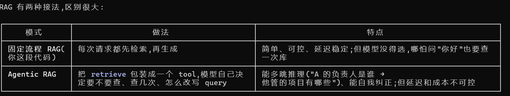
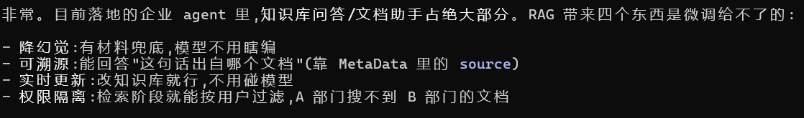
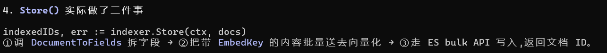

Eino ES8：向量检索与 RAG
简介
ES8 检索器是 Eino 框架中用于 Elasticsearch 8.x 的向量检索组件。它实现了 "Retriever"接口，可以与 Eino 的向量检索系统无缝集成，提供强大的语义搜索能力。
核心特性
- ✅ 实现了 `github.com/cloudwego/eino/components/retriever.Retriever` 接口
- ✅ 易于与 Eino 的检索系统集成
- ✅ 可配置的 Elasticsearch 参数
- ✅ 支持向量相似度搜索
- ✅ 多种搜索模式，包括近似搜索
- ✅ 支持自定义结果解析
- ✅ 灵活的文档过滤
安装 Elasticsearch 8.x
创建 细节 略
安装 ES8 中的检索器
go get github.com/cloudwego/eino-ext/components/retriever/es8@latest
还要配置 Elasticsearch Go的客户端 :
go get github.com/elastic/go-elasticsearch/v8@latest
基础使用
1.创建 Elasticsearch 客户端
func main() {
// ctx := context.Background()
// 方式一：简单连接（无认证）
client, err := elasticsearch.NewClient(elasticsearch.Config{
Addresses: []string{"http://192.168.179.138:9200"},
})
if err != nil {
log.Fatalf("连接 ES8 失败: %v", err)
}
fmt.Println(client)
}
2.创建索引并插入数据
创建索引 插入 向量数据
const (
indexName = "eino_example"
fieldContent = "content"
fieldContentVector = "content_vector"
)
func main() {
ctx := context.Background()
// 1. 创建 Elasticsearch 客户端
client, err := elasticsearch.NewClient(elasticsearch.Config{
Addresses: []string{"http://192.168.179.138:9200"},
})
if err != nil {
log.Fatalf("连接 ES8 失败: %v", err)
}
// 2. 创建 Embedding 模型
// 创建 ARK Embedding 模型
embedder, err := ark.NewEmbedder(ctx, &ark.EmbeddingConfig{
APIKey: os.Getenv("ARK_API_KEY"),
Model: os.Getenv("ARK_EMBEDDING_MODEL"), // 例如: doubao-embedding-large
})
if err != nil {
log.Fatalf("创建 Embedder 失败: %v", err)
}
// 3. 创建 Indexer
indexer, err := es8.NewIndexer(ctx, &es8.IndexerConfig{
Client: client,
Index: indexName,
Embedding: embedder,
DocumentToFields: func(ctx context.Context, doc *schema.Document) (map[string]es8.FieldValue, error) {
fields := make(map[string]es8.FieldValue)
// 内容字段，设置 EmbedKey 以便自动向量化
fields[fieldContent] = es8.FieldValue{
Value: doc.Content,
EmbedKey: fieldContentVector, // 对文档内容进行向量化并保存向量到 "content_vector" 字段
}
// 将元数据也添加到字段中
for k, v := range doc.MetaData {
fields[k] = es8.FieldValue{
Value: v,
}
}
return fields, nil
},
})
if err ;
// 4. 准备文档
docs := []*schema.Document{
{
Content: "Go 语言是 Google 开发的一门编程语言，具有并发编程的优势。",
MetaData: map[string]any{
"source": "go_intro",
"type": "programming",
},
},
{
Content: "Python 是一门易于学习的编程语言，广泛应用于数据科学和机器学习。",
MetaData: map[string]any{
"source": "python_intro",
"type": "programming",
},
},
{
Content: "北京是中国的首都，拥有丰富的历史文化和现代化建筑。",
MetaData: map[string]any{
"source": "beijing_intro",
"type": "geography",
},
},
}
// 5. 索引文档
fmt.Println("=== 开始索引文档 ===")
indexedIDs, err := indexer.Store(ctx, docs)
if err != nil {
log.Fatalf("索引失败: %v", err)
}
fmt.Printf("成功索引 %d 个文档\n", len(indexedIDs))
for i, id := range indexedIDs {
fmt.Printf(" 文档 %d: ID=%s\n", i+1, id)
}
}
3.通过检索器实现检索
const (
indexName = "eino_example"
fieldContent = "content"
fieldContentVector = "content_vector"
fieldExtraLpcation = "location"
docExtraLocation = "location"
)
func main(){
- 创建ctx + es的client + embedding模型
- 创建检索器(近似搜索模式)
retriever, err := es8.NewRetriever(ctx, &es8.RetrieverConfig{
Client: client,
Index: indexName,
TopK: 5,
SearchMode: search_mode.SearchModeApproximate(&search_mode.ApproximateConfig{
QueryFieldName: fieldContent,
VectorFieldName: fieldContentVector,
K: intPtr(5), // 返回的结果数量
NumCandidates: intPtr(10), // 候选数量（应该 >= k）
Hybrid: true, // 混合搜索（向量 + 文本）
RRF: false, // RRF 仅在特定许可证下可用
}),
ResultParser: func(ctx context.Context, hit types.Hit) (doc *schema.Document, err error) {
doc = &schema.Document{
ID: *hit.Id_,
Content: "",
MetaData: map[string]any{},
}
var src map[string]any
if err = json.Unmarshal(hit.Source_, &src); err != nil {
return nil, err
}
//解析字段
for field, val := range src {
switch field {
case fieldContent:
doc.Content = val.(string)
case fieldContentVector:
// 向量字段 (可选)
var v []float64
for _, item := range val.([]interface{}) {
v = append(v, item.(float64))
}
doc.WithDenseVector(v)
case fieldExtraLocation:
doc.MetaData[docExtraLocation] = val.(string)
default:
// 其他字段作为元数据
doc.MetaData[field] = val
}
}
//添加相似度分数
if hit.Score_ != nil {
doc.WithScore(float64(*hit.Score_))
}
return doc , nil
},
Embedding : embedder ,
})
if err ;
// 执行检索 (无过滤条件)
query := "编程语言"
fmt.Printf("=== 检索: %s ===\n", query)
docs, err := retriever.Retrieve(ctx, query)
if err != nil {
log.Fatalf("检索失败: %v", err)
}
fmt.Printf("检索到 %d 个相关文档:\n\n", len(docs))
for i, doc := range docs {
fmt.Printf("文档 %d:\n", i+1)
fmt.Printf(" ID: %s\n", doc.ID)
fmt.Printf(" 内容: %s\n", doc.Content)
score := doc.Score()
if score != 0 {
fmt.Printf(" 相似度分数: %.4f\n", score)
}
fmt.Printf(" 元数据: %v\n\n", doc.MetaData)
}
}
// intPtr 返回整数的指针
func intPtr(i int) *int{
return &i
}
4.带过滤条件的检索
docs, err = retriever.Retrieve(ctx, "编程语言",
es8.WithFilters([]types.Query{
{
Term: map[string]types.TermQuery{
"type": {
Value: "programming",
},
},
},
}),
)
if err != nil {
log.Fatalf("检索失败: %v", err)
}
完整示例 : RAG 系统 :
简介
RAG 是给模型"临时补课"的机制
大模型有两个死穴:
1. 知识有截止日期,不知道你公司昨天发的新规
2. 完全不知道你的私有数据(内部文档、数据库、客服记录)
解决办法有两条路:微调(贵、慢、知识更新要重训)、或者 RAG——先去外部知识库里搜出相关片段,塞进
prompt,让模型"看着材料回答"。绝大多数场景选后者
在 agent 架构里的位置
Agent = LLM(大脑) + Tools(手脚) + Memory(记忆) + 编排循环
↑
RAG 属于这一层


索引和检索必须用同一个 embedding 模型。换模型 =
▎ 换坐标系,老数据全部作废,必须重建索引。你这段代码里索引器和检索器共用一个 embedder 变量,是正确写法。

const (
indexName = "eino_rag_example" // ES 索引名,相当于"表名"
fieldContent = "content" // 存原文
fieldContentVector = "content_vector" // 存原文对应的向量
)
func main(){
ctx := context.BackGround() //创建上下文
//1. 创建 Elasticsearch客户端
client, err := elasticsearch.NewClient(elasticsearch.Config{
Addresses: []string{"http://192.168.179.138:9200"},
})
if err != nil {
log.Fatalf("连接 ES8 失败: %v", err)
}
// 2. 创建 Embedding 模型
// 创建 ARK Embedding 模型 (向量化模型)
embedder, err := ark.NewEmbedder(ctx, &ark.EmbeddingConfig{
APIKey: os.Getenv("ARK_API_KEY"),
Model: os.Getenv("ARK_EMBEDDING_MODEL"), // 例如: doubao-embedding-large
})
if err != nil {
log.Fatalf("创建 Embedder 失败: %v", err)
}
// 3. 创建 Indexer
indexer, err := es8indexer.NewIndexer(ctx, &es8indexer.IndexerConfig{
Client: client,
Index: indexName,
Embedding: embedder,
DocumentToFields: func(ctx context.Context, doc *schema.Document) (map[string]es8indexer.FieldValue, error) {
fields := make(map[string]es8indexer.FieldValue)
// 内容字段，设置 EmbedKey 以便自动向量化
fields[fieldContent] = es8indexer.FieldValue{
Value: doc.Content,
EmbedKey: fieldContentVector, // 对文档内容进行向量化并保存向量到 "content_vector" 字段
}
// 将元数据也添加到字段中
for k, v := range doc.MetaData {
fields[k] = es8indexer.FieldValue{
Value: v,
}
}
return fields, nil
},
})
if err != nil {
log.Fatalf("创建 Indexer 失败: %v", err)
}
// 准备知识库文档
docs := []*schema.Document{
{
Content: "Eino 是字节跳动开源的大语言模型应用开发框架，基于 Go 语言开发。",
MetaData: map[string]any{
"source": "eino_intro",
"category": "framework",
},
},
{
Content: "Eino 提供了 ChatModel、Embedding、Retriever 等丰富的组件，支持 Chain 和 Graph 两种编排方式。",
MetaData: map[string]any{
"source": "eino_components",
"category": "framework",
},
},
}
fmt.Println("=== 索引文档 ===")
indexedIDs, err := indexer.Store(ctx, docs)
if err != nil {
log.Fatalf("索引失败: %v", err)
}
fmt.Printf("成功索引 %d 个文档\n", len(indexedIDs))
for i, id := range indexedIDs {
fmt.Printf(" 文档 %d: ID=%s\n", i+1, id)
}
fmt.Println("文档索引完成")
// 手动刷新索引，确保数据立即可搜索
res, err := client.Indices.Refresh(client.Indices.Refresh.WithIndex(indexName))
if err != nil {
log.Printf("警告: 刷新索引失败: %v", err)
} else {
res.Body.Close()
fmt.Println("索引已刷新")
}
// 3. 创建检索器（近似搜索模式）
retriever, err := es8.NewRetriever(ctx, &es8.RetrieverConfig{
Client: client,
Index: indexName,
TopK: 5,
SearchMode: search_mode.SearchModeApproximate(&search_mode.ApproximateConfig{
QueryFieldName: fieldContent,
VectorFieldName: fieldContentVector,
K: intPtr(5), // 返回的结果数量
NumCandidates: intPtr(10), // 候选数量（应该 >= k）
Hybrid: true, // 混合搜索（向量 + 文本）
RRF: false, // RRF 仅在特定许可证下可用
}),
ResultParser: func(ctx context.Context, hit types.Hit) (doc *schema.Document, err error) {
doc = &schema.Document{
ID: *hit.Id_,
Content: "",
MetaData: map[string]any{},
}
var src map[string]any
if err = json.Unmarshal(hit.Source_, &src); err != nil {
return nil, err
}
// 解析字段
for field, val := range src {
switch field {
case fieldContent:
doc.Content = val.(string)
case fieldContentVector:
// 向量字段（可选）
var v []float64
for _, item := range val.([]interface{}) {
v = append(v, item.(float64))
}
doc.WithDenseVector(v)
default:
// 其他字段作为元数据
doc.MetaData[field] = val
}
}
// 添加相似度分数
if hit.Score_ != nil {
doc.WithScore(float64(*hit.Score_))
}
return doc, nil
},
Embedding: embedder,
})
if err != nil {
log.Fatalf("创建检索器失败: %v", err)
}
// 5. 创建 ChatModel
chatModel, err := deepseek.NewChatModel(ctx, &deepseek.ChatModelConfig{
APIKey: os.Getenv("DEEPSEEK_API_KEY"),
Model: "deepseek-chat",
BaseURL: "https://api.deepseek.com",
})
if err != nil {
log.Fatalf("创建 ChatModel 失败: %v", err)
}
// 6. RAG 流程: 检索 + 生成
userQuery := "Eino 框架有哪些主要组件？"
fmt.Printf("=== 用户问题: %s ===\n\n", userQuery)
// 6.1 检索相关文档
fmt.Println("步骤 1: 检索相关文档...")
retrievedDocs, err := retriever.Retrieve(ctx, userQuery)
if err != nil {
log.Fatalf("检索失败: %v", err)
}
fmt.Printf("检索到 %d 个相关文档:\n", len(retrievedDocs))
for i, doc := range retrievedDocs {
score := doc.Score()
if score != 0 {
fmt.Printf(" [%d] %s (分数: %.4f)\n", i+1, doc.Content, score)
} else {
fmt.Printf(" [%d] %s\n", i+1, doc.Content)
}
}
fmt.Println()
// 6.2 构建上下文
context := "相关文档内容: \n\n"
for i, doc := range retrievedDocs {
context += fmt.Sprintf("%d. %s\n", i+1, doc.Content)
}
// 6.3 使用 LLM 生成回答
fmt.Println("步骤 2: 生成回答...")
messages := []*schema.Message{
schema.SystemMessage(fmt.Sprintf(`你是一个专业的技术助手。
请基于以下文档内容回答用户问题。如果文档中没有相关信息，请如实告知。
%s`, context)),
schema.UserMessage(userQuery),
}
response, err := chatModel.Generate(ctx, messages)
if err != nil {
log.Fatalf("生成失败: %v", err)
}
fmt.Println("=== AI 回答 ===")
fmt.Println(response.Content)
// intPtr 返回整数的指针
func intPtr(i int) *int {
return &i
}
}